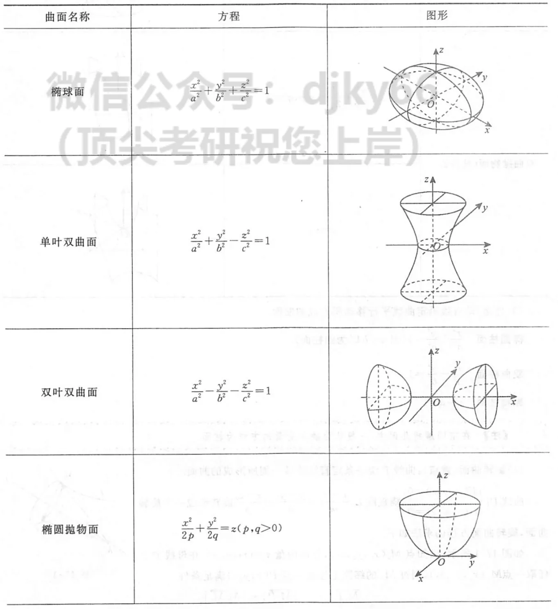
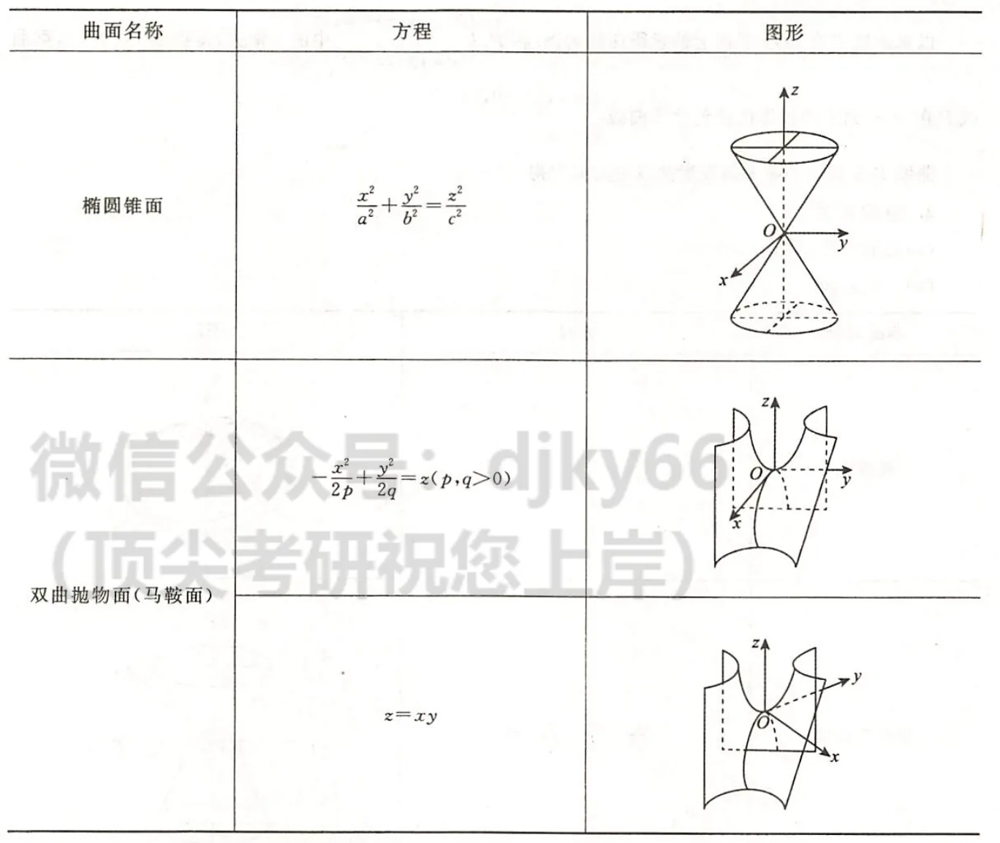

2022.07.02
数量积
$$
\boldsymbol{a}\cdot \boldsymbol{b} = (a_1,a_2,a_3)\cdot (b_1,b_2,b_3) = a_1b_1+a_2b_2+a_3b_3\
\boldsymbol{a}\cdot \boldsymbol{b} = |\boldsymbol{a}||\boldsymbol{b}|\cdot \cos\theta\to\cos\theta=\frac{\boldsymbol{a}\cdot\boldsymbol{b}}{|\boldsymbol{a}||\boldsymbol{b}|}=\frac{a_1b_1+a_2b_2+a_3b_3}{\sqrt{a_1^2+a_2^2+a_3^2}\cdot\sqrt{b_1^2+b_2^2+b_3^2}}\
\boldsymbol{a}\perp\boldsymbol{b} \Leftrightarrow |\boldsymbol{a}||\boldsymbol{b}|\cdot \cos\theta=0 \Leftrightarrow \theta=\frac{\pi}{2}\
Prj_b\boldsymbol{a} = \frac{\boldsymbol{a}\cdot \boldsymbol{b}}{|\boldsymbol{a}|},a在b上的投影
$$
向量积
$$
\boldsymbol{a}\times \boldsymbol{b} =
\begin{vmatrix}
\boldsymbol{i} & \boldsymbol{j} & \boldsymbol{k} \
a_i & a_j & a_k\
b_i & b_j & b_k
\end{vmatrix}\
|\boldsymbol{a}\times \boldsymbol{b}| = |\boldsymbol{a}|\cdot |\boldsymbol{b}|\cdot \sin\theta\
a\parallel b \Leftrightarrow \theta=0或\pi
$$
混合积
$$
[\boldsymbol{abc}]=(\boldsymbol{a}\times\boldsymbol{b})\cdot \boldsymbol{c} =
\begin{vmatrix}
a_i & a_j & a_k\
b_i & b_j & b_k\
c_i & c_j & c_k
\end{vmatrix}
\
\begin{vmatrix}
a_i & a_j & a_k\
b_i & b_j & b_k\
c_i & c_j & c_k
\end{vmatrix}=0 \Leftrightarrow 三向量共面
$$
方向角和方向余弦：方向角—向量与x，y，z轴正向的夹角
$$
方向余弦\
\cos \alpha = \frac{a_x}{|\boldsymbol{a}|}\
\cos \beta = \frac{a_x}{|\boldsymbol{a}|}\
\cos \gamma = \frac{a_x}{|\boldsymbol{a}|}
\单位向量\
\boldsymbol{a_0}=\frac{\boldsymbol{a}}{|\boldsymbol{a}|}={(\cos \alpha,\cos \beta,\cos \gamma)}\
任意向量\boldsymbol{r} = |\boldsymbol{r}|(\cos\alpha,\cos\beta,\cos\gamma)
$$
平面方程
$$
法向量:&\boldsymbol{n} = (A,B,C)\
一般式:&Ax+By+Cz+D = 0\
点法式:&A(x-x_0)+B(y-y_0)+C(z-z_0)=0\
三点式:&\begin{vmatrix}
x-x_1 & y-y_1 & z-z_1\
x-x_2 & y-y_2 & z-z_2\
x-x_3 & y-y_3 & z-z_3
\end{vmatrix}=0\
截距式:&\frac{x}{a}+\frac{y}{b}+\frac{z}{c} =1
$$
直线方程
$$
方向向量:&\tau = (l,m,n)\
一般式:&
\begin{cases}
A_1x+B_1y+C_1z+D_1 = 0,\boldsymbol{n}_1=(A_1,B_1,C_1)\
A_2x+B_2y+C_2z+D_2 = 0,\boldsymbol{n}_1=(A_2,B_2,C_2)\
\end{cases}
(n_1不平行于n_2)\
点向式:&\frac{x-x_0}{l}=\frac{y-y_0}{m}=\frac{z-z_0}{n}\
参数式:&\begin{cases}
x = x_0+lt\
y = y_0+mt\
z = z_0+nt
\end{cases}\
两点式:&\frac{x-x_1}{x_0-x_1}=\frac{y-y_1}{y_0-y_1}=\frac{z-z_1}{z_0-z_1}
$$
位置关系
$$
P(x_0,y_0,z_0)到Ax+By+Cz+D=0距离:&\frac{|Ax_0+By_0+Cz_0+D|}{\sqrt{A^2+B^2+C^2}}\
直线垂直:&方向向量内积为0\
直线平行:&方向向量分量成比例\
平面垂直:&法向量垂直\
平面平行:&法向量平行\
$$
空间曲线
$$
一般式:&\begin{cases}
F(x,y,z)=0\
G(x,y,z)=0
\end{cases}\
参数式:&\begin{cases}
x=\phi_1(t)\
y=\phi_2(t)\
z=\phi_3(t)
\end{cases}\
空间曲线在坐标面上的投影:&如果投影到XOY平面\
&消去\begin{cases}
F(x,y,z)=0\
G(x,y,z)=0
\end{cases}中的z,\
&得到\phi(x,y)=0\
&投影为：\begin{cases}
\phi(x,y)=0\
z=0
\end{cases}
$$
空间曲面


柱面
$$
椭圆柱面:&\frac{x^2}{a^2}+\frac{y^2}{b^2}=1\
双曲柱面:&\frac{x^2}{a^2}-\frac{y^2}{b^2}=1\
抛物柱面:&y=ax^2
$$
旋转曲面
$$
曲线\tau：&\begin{cases}
F(x,y,z)=0\
G(x,y,z)=0
\end{cases}\
绕直线：&\frac{x-x_0}{l}=\frac{y-y_0}{m}=\frac{z-z_0}{n}\
原材料:&\begin{cases}
直线上一点:P_0(x_0,y_0,z_0)\
曲线上一点:P_1(x_1,y_1,z_1)\
纬圆上一点:P(x,y,z)\
直线方向向量:(l,m,n)
\end{cases}\
旋转一周所组成的曲面:&\begin{cases}
【PP_1与直线垂直】\
l(x-x_1)+m(y-y_1)+n(z-z_1)=0\
【|P_1P_0|=|PP_0|】\
(x-x_0)^2+(y-y_0)^2+(z-z_0)^2=(x_1-x_0)^2+(y_1-y_0)^2+(z_1-z_0)^2\
【P_1在曲线上】\
F(x_1,y_1,z_1)=0\
G(x_1,y_1,z_1)=0
\end{cases}
$$
$$
空间曲线:&\begin{cases}
F(x,y,z)=0\
G(x,y,z)=0
\end{cases}\
P_0处切向量:&\tau=(
\begin{vmatrix}
F_y & F_z\
G_y & G_z
\end{vmatrix}{P_0},
\begin{vmatrix}
F_z & F_x\
G_z & G_x
\end{vmatrix},
\begin{vmatrix}
F_x & F_y\
G_x & G_y
\end{vmatrix}{P_0})\
P_0点线:&\frac{x-x_0}{\begin{vmatrix}
F_y & F_z\
G_y & G_z
\end{vmatrix}=}
\frac{y-y_0}{
\begin{vmatrix}
F_z & F_x\
G_z & G_x
\end{vmatrix}{P_0}}=
\frac{z-z_0}{
\begin{vmatrix}
F_x & F_y\
G_x & G_y
\end{vmatrix}\}
P_0切平面:&(x-x_0){\begin{vmatrix}
F_y & F_z\
G_y & G_z
\end{vmatrix}{P_0}}+
(y-y_0){
\begin{vmatrix}
F_z & F_x\
G_z & G_x
\end{vmatrix}+}
(z-z_0){
\begin{vmatrix}
F_x & F_y\
G_x & G_y
\end{vmatrix}_{P_0}}=0
$$
$$
空间曲面:z=f(x,y)\to F(x,y,z)=f(x,y)-z
$$
方向导数
$$
\begin{align}
定义法\
P(x,y,z)&=\begin{cases}
x-x_0=\Delta x=t\cdot \cos \alpha\
y-y_0=\Delta y=t\cdot \cos \beta\
z-z_0=\Delta z=t\cdot \cos \gamma
\end{cases}\
t&=\sqrt{(\Delta x)^2+(\Delta y)^2+(\Delta z)^2}\
\lim_{x\to 0^+}\frac{u(P)-u(P_0)}{t}
&=\lim_{x\to 0^+}\frac{u(x_0+t\cdot \cos \alpha,y_0+t\cdot \cos \beta,z_0+t\cdot \cos \gamma)-u(x_0,y_0,z_0)}{\sqrt{(\Delta x)^2+(\Delta y)^2+(\Delta z)^2}}\
&=u'_x(P_0)\cos\alpha+u'_y(P_0)\cos\beta+u'_z(P_0)\cos\gamma
\end{align}
$$
梯度
$$
\begin{align}
&[u'x(P_0)\cos\alpha+u'_y(P_0)\cos\beta+u'_z(P_0)\cos\gamma]\
=&[u'x(P_0),u'_y(P_0),u'_z(P_0)]\cdot[\cos\alpha,\cos\beta,\cos\gamma]\
=&[u'_x(P_0),u'_y(P_0),u'_z(P_0)]\cdot[1,1,1]\
\to&梯度方向,方向导数取的最大值
\end{align}
$$
散度
$$
A(x,y,z) = (P(x,y,z),Q(x,y,z),R(x,y,z))\
div A = \frac{\partial P}{\partial x}+ \frac{\partial Q}{\partial y}+ \frac{\partial R}{\partial z}\
$$
旋度
$$
A(x,y,z) = (P(x,y,z),Q(x,y,z),R(x,y,z))\
rot A=\begin{vmatrix}
i & j & k\
\frac{\partial}{\partial x} & \frac{\partial}{\partial y}&\frac{\partial z}{\partial}\
P&Q&R
\end{vmatrix}
$$